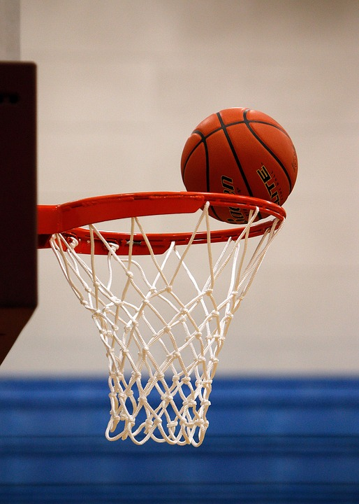
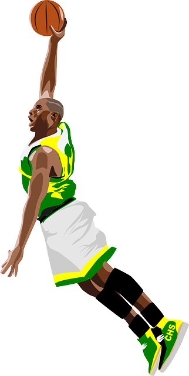

Hi, my name is Kevin McAdoo and as you can see this website is going to provide a
few words of motivation to kick off your exciting Monday. The rest is a bibliography of me.
As you see basketball has been my favorite sport from all levels since the age of 11.
Even though I never continued to play basketball up into the next level
this website tells you that whatever your dream may be, follow it. There will always be
ups and downs but if you stick with it, all of it will pay off.
Motivational quote made by NBA star Kevin Durant
He says, Hard work beats talent when talent doesn't work hard!
The book Kevin Durant : Basketball Superstar (Paperback) by Matt Doeden is available in stores now for more
information

All ages matter
I love to watch Basketball from all
different age groups. When going to a actual game it is fun to watch
because there are so many things that go on in the game. Even starting at a
young age their may be a good game viewed because it gives you a chance to see that a kid
can get looked at one day as a superstar. You could say that kid
has potential and can watch him grow over the years. Especially coach scouts in todays style of play
players are recruited because they are looked up since youth. In a game it could be a nice play, good shot, dunk, perfect pass, or excellent defense.
Along with all of that, players and fans trash talk throughout the game saying things such as,
GIVE THE BALL TO NUMBER 10 HE CAN'T SHOOT! Sometimes the fans that are dedicated to their
team try to help them out by screaming things like, WATCH NUMBER 10 HE OPEN! When
it gets to the professional level you may have fans chanting whatever comes to their
mind and you can hear it throughout the arena. All of it just sets a new tone to the game.
Live up to the Hype!
I find basketball as a main source of entertainment on tv.
Especially, if I know that a big game is going to be played ahead of time in
which I look for on my phone app. When I see my friends from time to time
we may ask each other did you see that game last night? Both of us would give our opinion
on the game and players. Trash talk about the players and games from time to time
as well. For the most part of it all of the hype is
compiled if it is a playoff game we're talking about. Millions around the
world anticipate and watch the NBA finals every year when it premieres in June. Whoever
looses in those finals has a long summer ahead of them to want to get back to the finals.
Teams of the NBA
NBA:
National Basketball Association
NCAA:
National Collegiate Athletic Association
A video on Success!
Teams of the NCAA
Middle
High
College
Pro
League:
Middle School
High School
NCCA
NBA
Organization:
GHMS
Orange
UNC
MH
Professional Favoritism
In the Mens National Basketball Association league (NBA), my
favorite team is the Miami Heat . It has been my favorite team
since I was a little kid and the team still is up to this day. I remember as a little
kid I enjoyed watching guys like Dwayne Wade, Lebron James or Kobe Bryant.
As a favorite player I would have to go with Dwayne Wade, just because every time
he walks on the floor he would bring so much energy to his teammates and contribute
the most in the team winning. In 2006 he helped his
team to win their first championship against the Dallas Mavericks
where he was named MVP of the finals. Exciting moment, he was unstoppable!
At the age of 36, he is a older player now and has been run down with nagging
injury's. He will most definitely go down in the hall of fame one day.
College Favoritism
In the Mens College world of Basketball, my favorite team
to watch would have to be the Carolina Tar Heels . No matter win or loss
I support the UNC tar heels. I have been a fan ever since
my second cousin James Michael McAdoo looked at coming in as one of the top prospects
in the nation. I always watched him on tv but I was never able
to attend a game. Sadly, their was not a lot of connection with the family in receiving tickets. I know pretty bad right? When I did go to a game it was 2 years
later against the visiting Tennessee Vols. In that game the crowd grew wild
at every play as the match up went down to the wire.

History
When I played the sport of basketball it had become an obsession.
Perhaps, no matter where I was I had a basketball in my hand
ready to play. I would practice
when ever I would go to my grandmothers house. Even before I owned a car I would practice at home in my backyard.
My grandma's drive way was completely cemented with rocks making it
almost hard to run on without slipping. Moreover that never stopped
me from playing as I would do drill after drill for hours. During my span
I had worked to be good enough to play for a few teams.
I played for a few leagues such as middle school, rec, and travel league. My experiences of
playing middle school ball was very hard. I was so excited on making the team in tryouts
after working my butt off the summer before with my uncle that I didn't
realize all of the things that truly come with playing sports. I didn't
know that if you had a bad game, stay in the gym that same night and get up
extra shots, get good sleep, eat healthy meals before/after games in general etc.
I didn't realize that no matter if you win a game or lose a game that is always
room to get better. Heading into high school was when
I played for the rec league. Even then I could tell
a difference between my game and a year before. Once I was in my sophomore year
of high school I played rec league for another summer
and I was hyped to actually have the experience of
going on a roll to dropping 21 points in a game. At the same time it was only the beginning
as my senior year in high school I played travel league
in a game tournament in which every one on the floor was a average of about 6'3".
Yeah! Overwhelming. In the end it was all fun. After loosing
in that tournament in 4 games I took a step back for a while from playing basketball.
I needed to find myself. At the age of 19, now it's hard to play Basketball as much as I would like
to, including my busy schedule of full time school and part time
work. Truthfully to become a professional in basketball most guys my height
at 5'5" don't make it to play at that level. A lot of times they
are told that they are too short. Regardless for me or any other person you will
always have someone criticizing you or hoping for you to fail. I would say for me as an
individual I am just blessed to be able to wake up everyday because their
are billions out there in the world who don't wake up, can't walk or are
in bad health. Whenever I do have
the chance to play I always go out
and give it my all like it's my last.